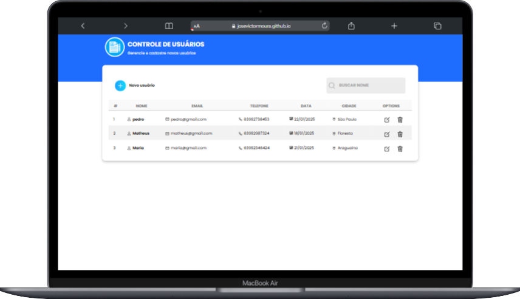
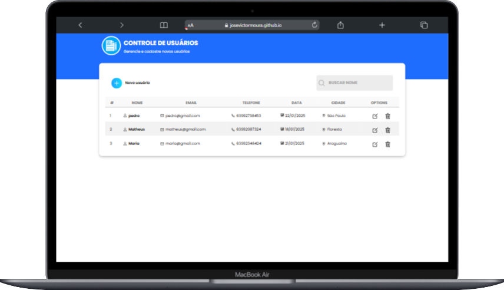
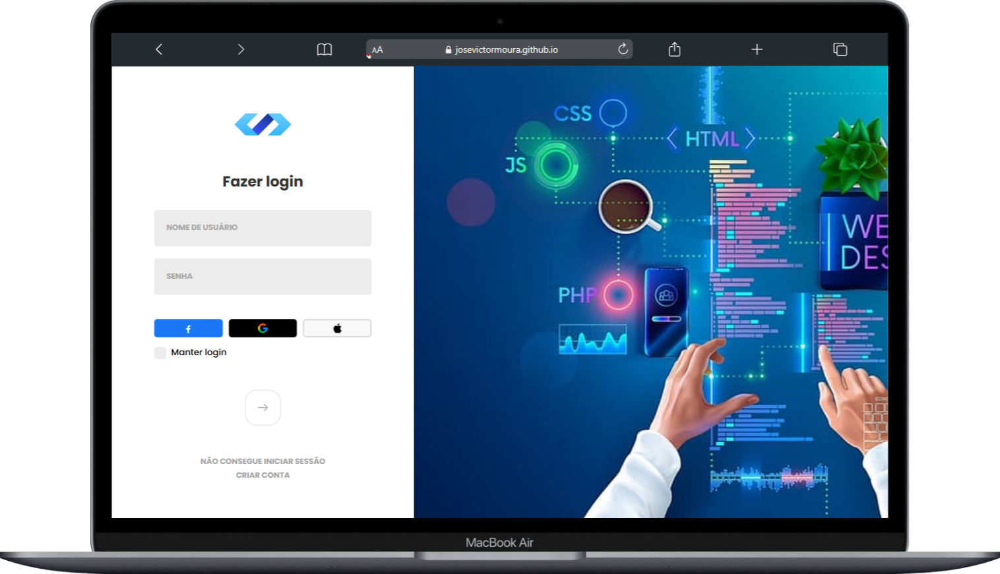
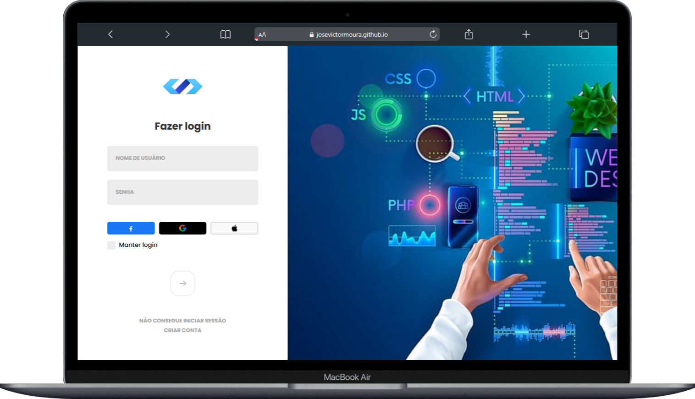

Olá, Eu sou o
José Victor Moura
Desenvolvedor Front End
Transformo ideias em interfaces interativas e intuitivas, unindo criatividade, tecnologia e atenção aos detalhes para desenvolver soluções funcionais e esteticamente atraentes. Sempre priorizo a usabilidade e acessibilidade, criando experiências digitais que conectam pessoas e marcas de forma significativa e memorável."


 

 
